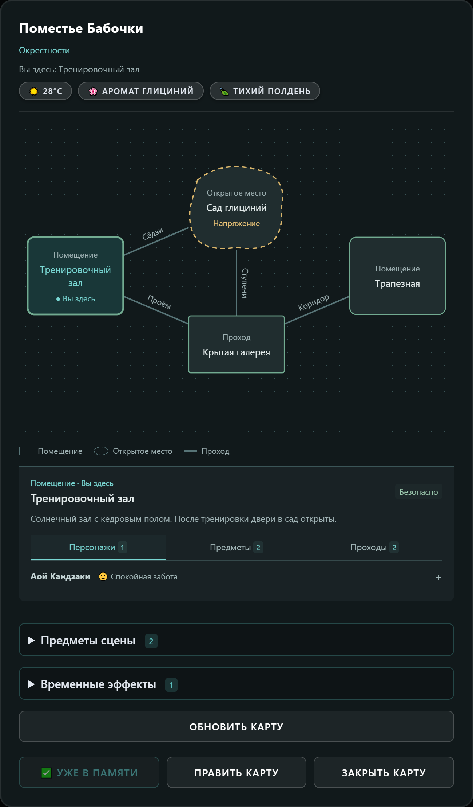
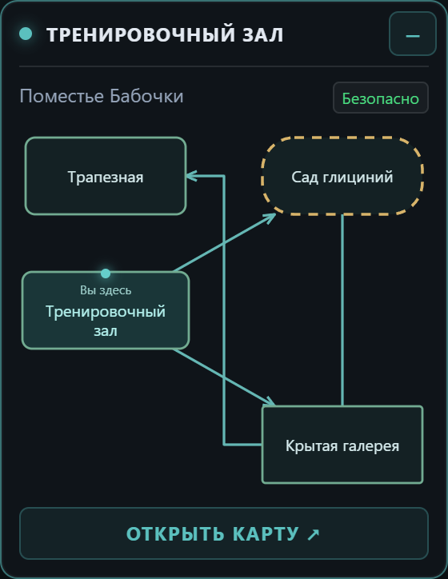
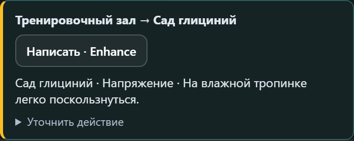
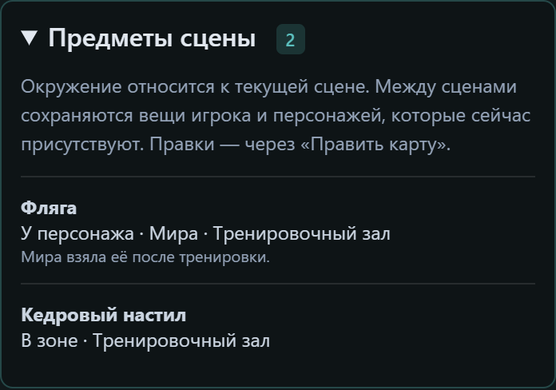
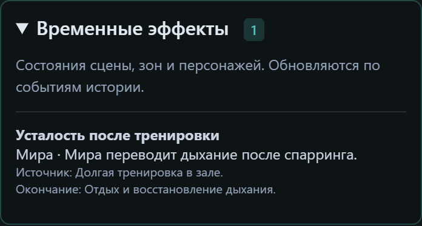

<!doctype html><html lang="ru"><meta charset="utf-8"><title>BB Interactive Map — 2.0</title>
                <style>*{box-sizing:border-box}body{margin:0;background:#0c1115;color:#e5f4f3;font:16px 'Segoe UI',sans-serif}main{width:1200px;margin:auto;padding:56px 48px 32px;background:radial-gradient(ellipse at 95% 0%,#17303480,transparent 45%),#0e1418}.eyebrow,h2{font-size:11px;letter-spacing:2.6px;text-transform:uppercase;color:#69cfca}h1{font-size:40px;letter-spacing:-1.2px;margin:12px 0}header{display:flex;align-items:center;justify-content:space-between;border-bottom:1px solid #26363b;padding-bottom:30px;margin-bottom:30px}.subtitle{color:#b2c6cb;font-size:16px;margin:0}.badge{padding:9px 14px;border:1px solid #396665;border-radius:30px;font-size:12px;color:#94dad5}.layout{display:grid;grid-template-columns:700px 370px;gap:30px;align-items:start}h2{margin:0 0 14px}figure{margin:0 0 27px}img{display:block;width:100%;height:auto;border-radius:12px}figcaption{font-size:13px;color:#afc0c6;line-height:1.6;margin-top:12px}.widget{width:280px;margin:auto}.phone{width:44px;border-radius:0}aside .phone-row{display:flex;gap:18px;align-items:center;margin:16px 0 24px}.phone-row p{font-size:13px;color:#afc0c6;line-height:1.5;margin:0}.note{margin:26px 0;padding:18px 0;border-top:1px solid #26363b;color:#afc0c6;font-size:14px;line-height:1.65}.note strong{color:#e5f4f3;display:block;margin-bottom:6px}footer{display:flex;justify-content:space-between;gap:24px;border-top:1px solid #26363b;padding-top:22px;margin-top:16px;color:#9cafb6;font-size:10px;line-height:1.6}</style>
                <main><header><div><div class="eyebrow">SillyTavern extension</div><h1>BB Interactive Map</h1><p class="subtitle">Места, маршруты и память вашей истории.</p></div><span class="badge">ВЕРСИЯ 2.0</span></header>
                <div class="layout"><section><h2>Карта сцены · места и проходы</h2><figure><figcaption>Выберите место: персонажи, предметы и проходы рядом со схемой. Обновление, редактор и сохранённое состояние — в том же окне.</figcaption></figure></section>
                <aside><h2>Плавающая миникарта</h2><figure><figcaption>Текущее положение и ближайшие места. Полная карта — одним нажатием.</figcaption></figure>
                <div class="phone-row"><p>На телефоне сворачивается в кнопку.<br>Нажатие возвращает миникарту.</p></div>
                <h2>Переход через Enhance Gen</h2><figure></figure>
                <h2>Игровой режим · предметы</h2><figure></figure>
                <h2>Временные эффекты</h2><figure></figure>
                <div class="note"><strong>Контекст для вашей модели</strong>Память отдельно для каждого чата. Обновления после ответа персонажа. Необязательная связь с Enhance Gen и VNE.</div></aside></div>
                <footer><span>github.com/maxkara14/BB-Interactive-Map</span><span>Пример сцены</span></footer></main></html>